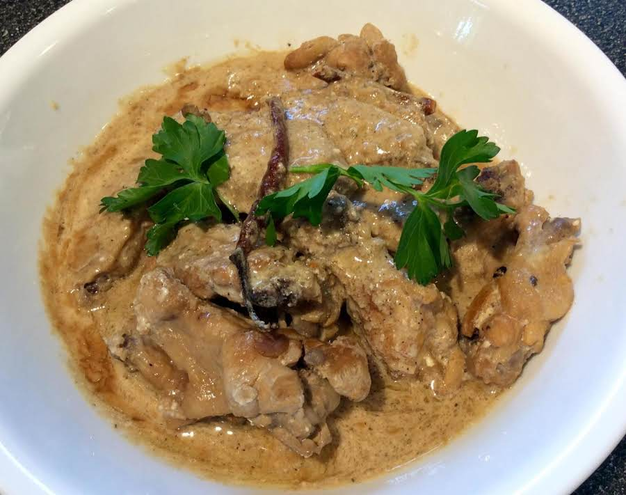

Chicken Adobo with Coconut Milk (Adobo sa Gata) Recipe
What is Chicken Adobo with Coconut Milk (Adobo sa Gata)?
“Chicken Adobo with Coconut Milk” or “Adobo sa Gata” is a Filipino dish that is a variation of the classic adobong manok. It is made by marinating chicken in soy sauce, garlic, and crushed peppercorn for at least 20 minutes. The chicken is then cooked with garlic, dried bay leaves, and vinegar until it browns. Coconut milk is added to the pot to enhance the flavor of the dish. The dish is then simmered until the chicken becomes tender. The recipe is simple and straightforward, and it takes about 1 hour and 10 minutes to prepare and cook.
Ingredients
1 ½ cups spiced cane vinegar
1 ½ cups soy sauce
¾ cup brewed coffee
½ cup packed dark brown sugar
2 tablespoons coconut oil
8 chicken leg quarters
1 tablespoon coarsely chopped garlic
⅓ cup minced shallots
¼ cup minced garlic
3 tablespoons whole black peppercorns
6 bay leaves
cheesecloth and kitchen string
½ pound fresh shiitake mushrooms, stems removed and caps thinly sliced
½ pound oyster mushrooms, sliced
1 ½ cups coconut cream
2 tablespoons ground turmeric
2 green onions, chopped
Instructions / How to Cook
1. Whisk together vinegar, soy sauce, coffee, and brown sugar in a bowl until sugar is dissolved.
2. Heat coconut oil in an 8-quart Dutch oven over high heat. Working in batches, add chicken, skin sides down first, and cook until golden brown and crispy, about 4 minutes on each side. Transfer to a plate.
3. Drain all but 2 tablespoons drippings from Dutch oven and return to heat. Add chopped garlic and fry until light brown and crisp, about 3 minutes. Remove to a small bowl, leaving drippings in the pot. Add shallots and minced garlic; cook, stirring constantly, until shallots are translucent and garlic has browned, about 5 minutes.
4. Put peppercorns and bay leaves in a square of cheesecloth tied with kitchen string. Add browned chicken quarters, vinegar mixture, and spice bundle to Dutch oven. Bring to a boil; boil for 1 to 2 minutes. Reduce heat, cover, and simmer for 30 minutes. Add shiitake and oyster mushrooms, coconut cream, and turmeric. Cover and simmer until chicken is tender, 15 to 20 minutes more.
5. Cut leg quarters in half at joint or pull meat from bones and shred. Remove spice bundle and skim fat from sauce. Return chicken to the sauce. Sprinkle with green onions and the fried garlic.